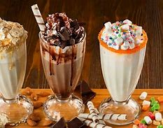

Foods
Hamburger
A quintessential American dish, the hamburger consists of a seasoned beef patty served in a soft bun.
Customize it with toppings like lettuce, tomato, cheese, and condiments.
Poutine
Originating from Quebec, poutine is a comforting dish made of crispy French fries topped with cheese curds and smothered in rich gravy.
Clam Chowder
A creamy soup made with tender clams, potatoes, onions, and sometimes bacon. It’s especially popular in the coastal regions of New England
Key Lime Pie
A tangy dessert made with a graham cracker crust, creamy lime filling, and topped with whipped cream. It’s a taste of the tropics.

Tacos
While originally from Mexico, tacos have become a beloved North American street food.
Fill soft or crispy tortillas with seasoned meat, salsa, and toppings.